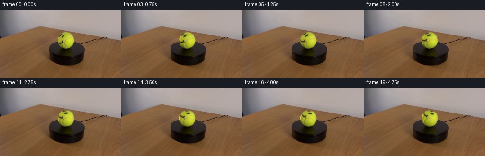
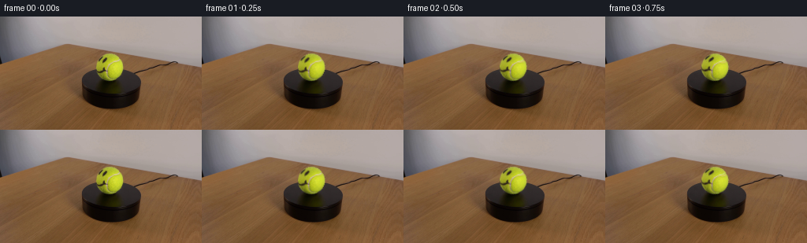
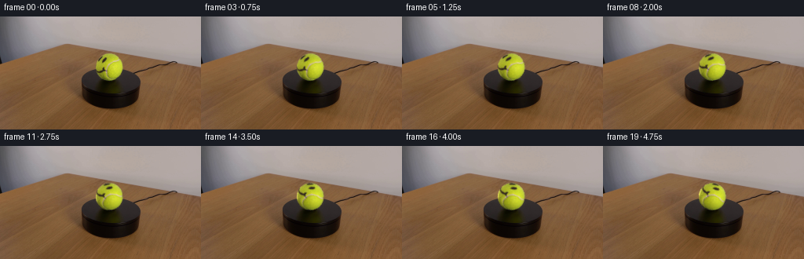
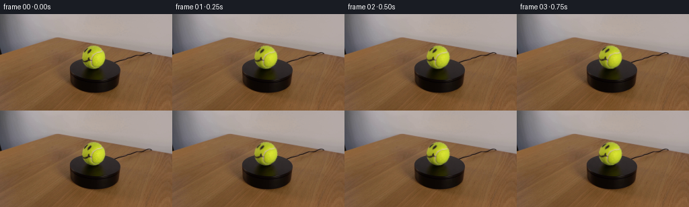
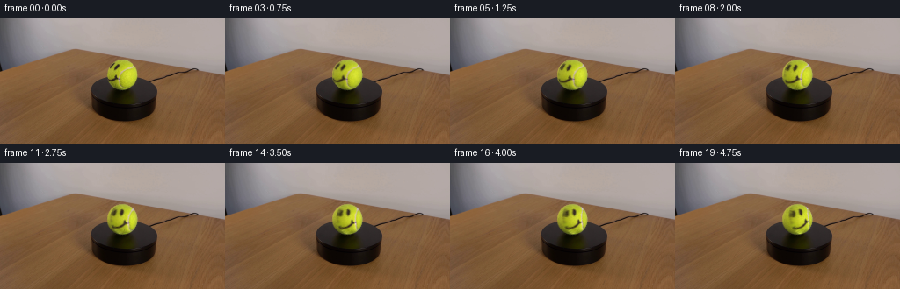

CODING AGENTS AS PIXEL WORLD MODELS
traex/GPT-6.1-Sol · 0168
点击播放 · 原生 RGB 像素
逐轮保存的候选
回放视频、检查图与代码变化。
每份候选均可单独播放。实际图片检查记录在下方工具轨迹中。
候选 01播放与检查图
点击播放 · 原生 RGB 像素


展开代码变化
--- 上一保存版本
+++ 本次保存版本
@@ -0,0 +1,86 @@
+from pathlib import Path
+import numpy as np
+from PIL import Image
+from scipy import ndimage
+from scipy.special import erf
+import artifact_io
+
+
+def generate():
+ root = Path(__file__).resolve().parent
+ image = np.asarray(Image.open(root / 'first_frame.png').convert('RGB'), dtype=np.float64)
+ h, w = image.shape[:2]
+ yy, xx = np.mgrid[:h, :w]
+ # The ball is stationary in space. Its surface turns clockwise about
+ # an axis through its center, while the light, stand, and camera stay fixed.
+ cx, cy = 138.85, 64.20
+ rx, ry = 17.35, 17.65
+ u, v = (xx - cx) / rx, (yy - cy) / ry
+ radius = np.sqrt(u*u + v*v)
+ z = np.sqrt(np.maximum(0., 1.-u*u-v*v))
+ basis = np.stack((np.ones_like(u), u, v, z, u*u, v*v, u*v,
+ u*z, v*z, u**3, v**3, u*u*v, u*v*v), axis=-1)
+ red, green, blue = image.transpose(2, 0, 1)
+ valid = ((radius < .96) & (green > 85) & (blue < green*.37)
+ & (green > red*.94))
+ # Robustly fit the unmarked, yellow felt. This is only a stationary
+ # irradiance estimate: the actual photographed texture is retained.
+ for _ in range(3):
+ coeff = np.linalg.lstsq(basis[valid], image[valid], rcond=None)[0]
+ shade = basis @ coeff
+ valid &= np.linalg.norm(image-shade, axis=-1) < 24
+ shade = np.maximum(shade, [35., 35., 14.])
+ distance = (1.0 - radius) * (rx + ry) / 2
+ alpha = .5*(1.+erf(distance/(np.sqrt(2)*.46)))
+ alpha[radius > 1.10] = 0
+ # Recover foreground color from the antialiased circular boundary. The
+ # surroundings are sampled on the same scanline, never moved or repainted.
+ background = np.zeros_like(image)
+ for y in range(h):
+ half = rx*np.sqrt(max(0., 1.-((y-cy)/ry)**2))
+ left = int(np.floor(cx-half-2))
+ right = int(np.ceil(cx+half+2))
+ lc = np.mean(image[y, max(0,left-2):left+1], axis=0)
+ rc = np.mean(image[y, right:min(w,right+3)], axis=0)
+ blend = np.clip((xx[y]-left)/max(1,right-left),0.,1.)
+ background[y] = (1.-blend[:,None])*lc + blend[:,None]*rc
+ a = alpha[...,None]
+ foreground = (image-(1-a)*background)/np.maximum(a,.08)
+ material = np.clip(foreground/shade, .08, 1.80)
+ # The outermost samples contain too little foreground to deconvolve
+ # reliably. Fill them from the nearest resolved surface texel.
+ reliable = (alpha > .44) & (radius < 1.01)
+ _, inds = ndimage.distance_transform_edt(~reliable, return_indices=True)
+ for ch in range(3):
+ material[...,ch][~reliable] = material[...,ch][inds[0][~reliable], inds[1][~reliable]]
+ # Mild contact-region correction keeps the fixed contact shadow out of
+ # the rotating felt map. The shadow is in the unchanged photograph.
+ contact = (yy > 79.8) & (radius < 1.04)
+ for ch in range(3):
+ smooth = ndimage.median_filter(material[...,ch], size=3)
+ material[...,ch][contact] = np.clip(smooth[contact], .80, 1.20)
+ original_surface = material*shade
+ frames = [image.astype(np.uint8)]
+ # 13 degrees per second, with uniform angular velocity at 4 fps.
+ for frame in range(1, 20):
+ theta = np.deg2rad(13.) * frame / 4.
+ co, si = np.cos(theta), np.sin(theta)
+ source_x = cx + rx*(co*u + si*v)
+ source_y = cy + ry*(-si*u + co*v)
+ rotated = np.stack([
+ ndimage.map_coordinates(material[...,ch], [source_y,source_x],
+ order=1, mode='nearest', prefilter=False)
+ for ch in range(3)
+ ], axis=-1)
+ result = image + a*(rotated*shade-original_surface)
+ # The original subpixel silhouette, lighting and contact shadow
+ # remain, even on the partially covered edge pixels.
+ result[alpha == 0] = image[alpha == 0]
+ frames.append(np.clip(np.rint(result),0,255).astype(np.uint8))
+ frames = np.stack(frames)
+ artifact_io.save(frames, root)
+ return frames
+
+
+if __name__ == '__main__':
+ generate()
候选 02播放与检查图
点击播放 · 原生 RGB 像素


展开代码变化
--- 上一保存版本
+++ 本次保存版本
@@ -46,7 +46,7 @@
background[y] = (1.-blend[:,None])*lc + blend[:,None]*rc
a = alpha[...,None]
foreground = (image-(1-a)*background)/np.maximum(a,.08)
- material = np.clip(foreground/shade, .08, 1.80)
+ material = np.clip(foreground/shade, .03, 5.00)
# The outermost samples contain too little foreground to deconvolve
# reliably. Fill them from the nearest resolved surface texel.
reliable = (alpha > .44) & (radius < 1.01)
候选 03播放与检查图
点击播放 · 原生 RGB 像素

展开代码变化
--- 上一保存版本
+++ 本次保存版本
@@ -11,8 +11,8 @@
image = np.asarray(Image.open(root / 'first_frame.png').convert('RGB'), dtype=np.float64)
h, w = image.shape[:2]
yy, xx = np.mgrid[:h, :w]
- # The ball is stationary in space. Its surface turns clockwise about
- # an axis through its center, while the light, stand, and camera stay fixed.
+ # The ball turns on its vertical axis clockwise, seen from above.
+ # The platform, illumination, silhouette and camera remain fixed.
cx, cy = 138.85, 64.20
rx, ry = 17.35, 17.65
u, v = (xx - cx) / rx, (yy - cy) / ry
@@ -61,17 +61,42 @@
material[...,ch][contact] = np.clip(smooth[contact], .80, 1.20)
original_surface = material*shade
frames = [image.astype(np.uint8)]
- # 13 degrees per second, with uniform angular velocity at 4 fps.
+ # The visible upper surface of the stand determines a slightly elevated
+ # viewing angle. Its projected axis is therefore tipped toward the camera.
+ elevation = np.deg2rad(27.)
+ axis = np.array([0., -np.cos(elevation), np.sin(elevation)])
+ normals = np.stack([u, v, z], axis=-1)
+ dot = np.sum(normals*axis, axis=-1)[...,None]
+ cross = np.cross(axis, normals)
+ rng = np.random.default_rng(168)
+ felt = rng.normal(0., 1., (72,144))
+ felt = ndimage.gaussian_filter(felt, .55)
+ felt = felt/felt.std() * .022
+ # Constant angular velocity: sixty-two degrees in the five-second shot.
for frame in range(1, 20):
- theta = np.deg2rad(13.) * frame / 4.
+ theta = -np.deg2rad(13.) * frame / 4.
co, si = np.cos(theta), np.sin(theta)
- source_x = cx + rx*(co*u + si*v)
- source_y = cy + ry*(-si*u + co*v)
+ source_normals = co*normals - si*cross + (1-co)*dot*axis
+ nx, ny, nz = source_normals.transpose(2,0,1)
+ source_x = cx + rx*nx
+ source_y = cy + ry*ny
rotated = np.stack([
ndimage.map_coordinates(material[...,ch], [source_y,source_x],
order=1, mode='nearest', prefilter=False)
for ch in range(3)
], axis=-1)
+ # As the ball turns, previously hidden felt is revealed. It carries
+ # the same local grain, and is shaded by the unchanged light field.
+ longitude = np.arctan2(nx,nz)
+ latitude = np.arcsin(np.clip(ny,-1,1))
+ grain = ndimage.map_coordinates(felt,
+ [(latitude/np.pi+.5)*71, (longitude/(2*np.pi)+.5)*143],
+ order=1, mode='wrap', prefilter=False)
+ unknown = 1. + grain[...,None]*np.array([1.,1.,1.4])
+ # The narrow limb band is blended to avoid magnifying edge-filter
+ # contamination into a thick stripe as it becomes front-facing.
+ visibility = np.clip(nz/.16,0.,1.)
+ rotated = visibility[...,None]*rotated+(1-visibility[...,None])*unknown
result = image + a*(rotated*shade-original_surface)
# The original subpixel silhouette, lighting and contact shadow
# remain, even on the partially covered edge pixels.
可观测工具轨迹
实际执行的命令与返回图片。
命令 1exit 0
/bin/bash -lc 'ls -la; cat prompt.txt; cat GENERATION_RULES.md'
命令 2exit 0
/bin/bash -lc "cat artifact_io.py; python - <<'PY'
from PIL import Image
import numpy as np
im=np.array(Image.open('first_frame.png')); print(im.shape)
for y in range(0,144,4):
s=''
for x in range(0,256,4):
c=im[y:y+4,x:x+4].mean((0,1));r,g,b=c
if r>130 and g>130 and b<.65*g: ch='Y'
elif max(c)<40:ch='#'
elif max(c)<85:ch='o'
elif max(c)<135:ch=':'
elif max(c)<185:ch='.'
else:ch=' '
s+=ch
print('%3d'%y,s)
PY"命令 3exit 0
/bin/bash -lc "python - <<'PY'
import numpy as np
from PIL import Image
from scipy import ndimage
im=np.array(Image.open('first_frame.png')).astype(float); r,g,b=im.transpose(2,0,1)
m=(r>110)&(g>100)&(b<g*.7)&(g>b+40)
label,n=ndimage.label(m)
for i in range(1,n+1):
ys,xs=np.where(label==i)
if len(xs)>15: print('region',len(xs),(xs.min(),ys.min(),xs.max(),ys.max()),'mean',im[ys,xs].mean(0))
chars=' .:-=+*#%@'
for y in range(39,88):
print('%3d'%y,''.join('Y' if m[y,x] else ('w' if min(im[y,x])>175 else chars[int((255-im[y,x].mean())/256*10)]) for x in range(110,163)))
print('Samples rows RGB:')
for y in [48,52,56,60,64,68,72,76,80]:
print(y, [(x,im[y,x].astype(int).tolist()) for x in range(119,156,2)])
PY"命令 4exit 0
/bin/bash -lc "python - <<'PY'
from PIL import Image
import numpy as np
from scipy import ndimage
im=np.array(Image.open('first_frame.png'));r,g,b=im.astype(float).transpose(2,0,1)
mask=(g-b>50)&(g>r-10)&(g>100)
for y in range(44,84):
xs=np.where(mask[y])[0];xs=xs[(xs>115)&(xs<162)]
print(y, (int(xs.min()),int(xs.max())) if len(xs) else None)
print('Dark map X 119-158')
for y in range(45,82):
print(f'{y:2d} ',''.join((' ' if g[y,x]-b[y,x]<50 and g[y,x]>70 else 'x' if g[y,x]<85 else 'o' if g[y,x]<130 else '.' if b[y,x]<.5*g[y,x] else 's') for x in range(119,159)))
PY"命令 5exit 0
/bin/bash -lc "python - <<'PY'
from PIL import Image
import numpy as np
im=np.array(Image.open('first_frame.png'))
# platform numerical dark mask 4x2 diagram
for y in range(61,123,2):
s=''
for x in range(96,181,2):
c=im[y:y+2,x:x+2].mean((0,1));s+= '#' if c.mean()<35 else 'X' if c.mean()<55 else 'o' if c.mean()<80 else '.' if c.mean()<120 else 'Y' if c[1]>c[2]+50 else ' '
print(y,s)
PY"命令 6exit 0
/bin/bash -lc "python - <<'PY'
import numpy as np
from PIL import Image
im=np.array(Image.open('first_frame.png')).astype(float)
for y in range(47,82):
coords=[]
for x in range(122,157):
r,g,b=im[y,x]
if (x-139)**2+(y-64)**2<17.4**2 and b>.39*g and g>95:
coords.append((x,int(b),int(g)))
print(y,coords)
PY"命令 7exit 0
/bin/bash -lc "python - <<'PY'
import numpy as np
from PIL import Image
im=np.array(Image.open('first_frame.png'))
for y in [45,46,47,48,50,54,59,63,68,72,76,79,80,81,82]:
print(y, [(x,im[y,x].tolist()) for x in range(121,158)])
PY"命令 8exit 0
/bin/bash -lc "python - <<'PY'
import numpy as np
from PIL import Image
im=np.array(Image.open('first_frame.png')).astype(float)
y,x=np.mgrid[:144,:256];cx,cy,rx,ry=138.9,64.2,17.15,17.45
u=(x-cx)/rx; v=(y-cy)/ry;z=np.sqrt(np.maximum(0,1-u*u-v*v));rho=np.sqrt(u*u+v*v)
base=np.stack([u*0+1,u,v,z,u*u,v*v,u*v,u*z,v*z,u**3,v**3,u*u*v,u*v*v],-1)
r,g,b=im.transpose(2,0,1)
valid=(rho<.96)&(g>85)&(b<g*.37)&(g>r*.94)
for _ in range(3):
coef=np.linalg.lstsq(base[valid],im[valid],rcond=None)[0];p=base@coef
e=np.linalg.norm(im-p,axis=-1)
valid=valid&(e<24)
print('samples',valid.sum(),'std',np.std((im-p)[valid],0))
for yy in [48,52,56,60,64,68,72,76,79,80]:
print(yy,[(xx,np.round(p[yy,xx]).tolist()) for xx in [123,128,133,138,143,148,153] if rho[yy,xx]<1])
np.save('.tmp/clean.npy',p)
PY"命令 9exit 0
/bin/bash -lc "cat > generate.py <<'PY'
from pathlib import Path
import numpy as np
from PIL import Image
from scipy import ndimage
from scipy.special import erf
import artifact_io
def generate():
root = Path(__file__).resolve().parent
image = np.asarray(Image.open(root / 'first_frame.png').convert('RGB'), dtype=np.float64)
h, w = image.shape[:2]
yy, xx = np.mgrid[:h, :w]
# The ball is stationary in space. Its surface turns clockwise about
# an axis through its center, while the light, stand, and camera stay fixed.
cx, cy = 138.85, 64.20
rx, ry = 17.35, 17.65
u, v = (xx - cx) / rx, (yy - cy) / ry
radius = np.sqrt(u*u + v*v)
z = np.sqrt(np.maximum(0., 1.-u*u-v*v))
basis = np.stack((np.ones_like(u), u, v, z, u*u, v*v, u*v,
u*z, v*z, u**3, v**3, u*u*v, u*v*v), axis=-1)
red, green, blue = image.transpose(2, 0, 1)
valid = ((radius < .96) & (green > 85) & (blue < green*.37)
& (green > red*.94))
# Robustly fit the unmarked, yellow felt. This is only a stationary
# irradiance estimate: the actual photographed texture is retained.
for _ in range(3):
coeff = np.linalg.lstsq(basis[valid], image[valid], rcond=None)[0]
shade = basis @ coeff
valid &= np.linalg.norm(image-shade, axis=-1) < 24
shade = np.maximum(shade, [35., 35., 14.])
distance = (1.0 - radius) * (rx + ry) / 2
alpha = .5*(1.+erf(distance/(np.sqrt(2)*.46)))
alpha[radius > 1.10] = 0
# Recover foreground color from the antialiased circular boundary. The
# surroundings are sampled on the same scanline, never moved or repainted.
background = np.zeros_like(image)
for y in range(h):
half = rx*np.sqrt(max(0., 1.-((y-cy)/ry)**2))
left = int(np.floor(cx-half-2))
right = int(np.ceil(cx+half+2))
lc = np.mean(image[y, max(0,left-2):left+1], axis=0)
rc = np.mean(image[y, right:min(w,right+3)], axis=0)
blend = np.clip((xx[y]-left)/max(1,right-left),0.,1.)
background[y] = (1.-blend[:,None])*lc + blend[:,None]*rc
a = alpha[...,None]
foreground = (image-(1-a)*background)/np.maximum(a,.08)
material = np.clip(foreground/shade, .08, 1.80)
# The outermost samples contain too little foreground to deconvolve
# reliably. Fill them from the nearest resolved surface texel.
reliable = (alpha > .44) & (radius < 1.01)
_, inds = ndimage.distance_transform_edt(~reliable, return_indices=True)
for ch in range(3):
material[...,ch][~reliable] = material[...,ch][inds[0][~reliable], inds[1][~reliable]]
# Mild contact-region correction keeps the fixed contact shadow out of
# the rotating felt map. The shadow is in the unchanged photograph.
contact = (yy > 79.8) & (radius < 1.04)
for ch in range(3):
smooth = ndimage.median_filter(material[...,ch], size=3)
material[...,ch][contact] = np.clip(smooth[contact], .80, 1.20)
original_surface = material*shade
frames = [image.astype(np.uint8)]
# 13 degrees per second, with uniform angular velocity at 4 fps.
for frame in range(1, 20):
theta = np.deg2rad(13.) * frame / 4.
co, si = np.cos(theta), np.sin(theta)
source_x = cx + rx*(co*u + si*v)
source_y = cy + ry*(-si*u + co*v)
rotated = np.stack([
ndimage.map_coordinates(material[...,ch], [source_y,source_x],
order=1, mode='nearest', prefilter=False)
for ch in range(3)
], axis=-1)
result = image + a*(rotated*shade-original_surface)
# The original subpixel silhouette, lighting and contact shadow
# remain, even on the partially covered edge pixels.
result[alpha == 0] = image[alpha == 0]
frames.append(np.clip(np.rint(result),0,255).astype(np.uint8))
frames = np.stack(frames)
artifact_io.save(frames, root)
return frames
if __name__ == '__main__':
generate()
PY
python generate.py
python - <<'PY'
from PIL import Image
import numpy as np
for i in [0,1,5,10,15,19]:
im=np.array(Image.open(f'frames/{i:02}.png'))
print('\\nFRAME',i)
for y in range(46,83):
print(''.join(' ' if (x-138.85)**2+((y-64.2)*17.35/17.65)**2>17.8**2 else '#' if im[y,x,1]<85 else '+' if im[y,x,1]<130 else 's' if im[y,x,2]>.42*im[y,x,1] else '.' for x in range(121,158)))
PY"命令 10exit 0
/bin/bash -lc "sed -i 's/np.clip(foreground\\/shade, .08, 1.80)/np.clip(foreground\\/shade, .03, 5.00)/' generate.py
python generate.py
python - <<'PY'
from PIL import Image
import numpy as np
for i in [5,10,19]:
im=np.array(Image.open(f'frames/{i:02}.png'))
print('\\nFRAME',i)
for y in range(47,82):
print(''.join(' ' if (x-138.85)**2+((y-64.2)*17.35/17.65)**2>17.8**2 else '#' if im[y,x,1]<85 else '+' if im[y,x,1]<130 else 's' if im[y,x,2]>.42*im[y,x,1] else '.' for x in range(121,158)))
PY"命令 11exit 0
/bin/bash -lc "cp generate.py .tmp/generate_screen_rotation.py
python - <<'PY'
p='generate.py'
s=open(p).read().replace('from scipy.special import erf','from scipy.special import erf')
s=s.replace(' # The ball is stationary in space. Its surface turns clockwise about\\n # an axis through its center, while the light, stand, and camera stay fixed.',' # The ball turns on its vertical axis clockwise, seen from above.\\n # The platform, illumination, silhouette and camera remain fixed.')
start=s.index(' # 13 degrees per second')
end=s.index(' result = image + a*',start)
s=s[:start]+''' # The visible upper surface of the stand determines a slightly elevated\\n # viewing angle. Its projected axis is therefore tipped toward the camera.\\n elevation = np.deg2rad(27.)\\n axis = np.array([0., -np.cos(elevation), np.sin(elevation)])\\n normals = np.stack([u, v, z], axis=-1)\\n dot = np.sum(normals*axis, axis=-1)[...,None]\\n cross = np.cross(axis, normals)\\n rng = np.random.default_rng(168)\\n felt = rng.normal(0., 1., (72,144))\\n felt = ndimage.gaussian_filter(felt, .55)\\n felt = felt/felt.std() * .022\\n # Constant angular velocity: sixty-two degrees in the five-second shot.\\n for frame in range(1, 20):\\n theta = -np.deg2rad(13.) * frame / 4.\\n co, si = np.cos(theta), np.sin(theta)\\n source_normals = co*normals - si*cross + (1-co)*dot*axis\\n nx, ny, nz = source_normals.transpose(2,0,1)\\n source_x = cx + rx*nx\\n source_y = cy + ry*ny\\n rotated = np.stack([\\n ndimage.map_coordinates(material[...,ch], [source_y,source_x],\\n order=1, mode='nearest', prefilter=False)\\n for ch in range(3)\\n ], axis=-1)\\n # As the ball turns, previously hidden felt is revealed. It carries\\n # the same local grain, and is shaded by the unchanged light field.\\n longitude = np.arctan2(nx,nz)\\n latitude = np.arcsin(np.clip(ny,-1,1))\\n grain = ndimage.map_coordinates(felt,\\n [(latitude/np.pi+.5)*71, (longitude/(2*np.pi)+.5)*143],\\n order=1, mode='wrap', prefilter=False)\\n unknown = 1. + grain[...,None]*np.array([1.,1.,1.4])\\n # The narrow limb band is blended to avoid magnifying edge-filter\\n # contamination into a thick stripe as it becomes front-facing.\\n visibility = np.clip(nz/.16,0.,1.)\\n rotated = visibility[...,None]*rotated+(1-visibility[...,None])*unknown\\n''' + s[end:]
open(p,'w').write(s)
PY
python generate.py
python - <<'PY'
from PIL import Image
import numpy as np
for i in [0,1,5,10,15,19]:
im=np.array(Image.open(f'frames/{i:02}.png'))
print('\\nFRAME',i)
for y in range(47,82):
print(''.join(' ' if (x-138.85)**2+((y-64.2)*17.35/17.65)**2>17.8**2 else '#' if im[y,x,1]<85 else '+' if im[y,x,1]<130 else 's' if im[y,x,2]>.42*im[y,x,1] else '.' for x in range(121,158)))
PY"命令 12exit 0
/bin/bash -lc "python - <<'PY'
from PIL import Image
import numpy as np
f=np.stack([np.array(Image.open(f'frames/{i:02d}.png')) for i in range(20)])
y,x=np.mgrid[:144,:256];rr=((x-138.85)/17.35)**2+((y-64.2)/17.65)**2
print('shape dtype',f.shape,f.dtype,'first identical',np.array_equal(f[0],np.array(Image.open('first_frame.png'))))
for i in [1,5,10,19]:
d=np.abs(f[i].astype(int)-f[0].astype(int)); m=np.any(d>0,-1); print(i,'pixels changed',m.sum(),'mean difference',d[rr<1].mean(),'outside',d[rr>1.21].max(), 'max',d.max())
print('adjacent',np.round(np.mean(np.abs(np.diff(f.astype(float),axis=0)),axis=(1,2,3)),3))
PY
ls -lh pixels.npz index.html"保存候选 3 份；完成命令 12 次；可验证图片返回 0 张。原始 API 响应与完整日志保留在本地。